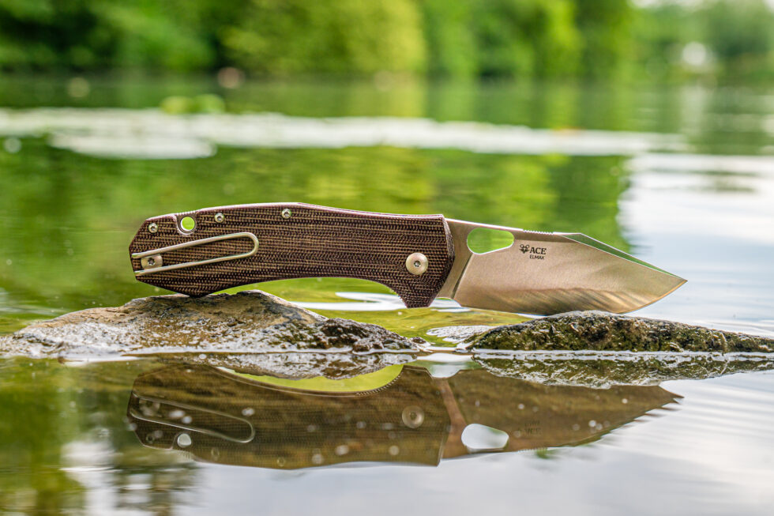

GiantMouse Ace Grand
A GiantMouse Ace Grand az egyik legelegánsabb zsebkés, amit kézbe vettem az utóbbi időben. Az olasz-amerikai dizájner páros — Jens Ansø és Jesper Voxnæs — munkája, akik a minimalista skandináv esztétikát ötvözték az olasz kézműves hagyományokkal. Az eredmény egy kompakt, mégis karakteres darab, amely első pillantásra megragadja az embert.
Az M390-es acél a pengén nem szorul különösebb bemutatásra: kiváló élmegtartás, korrózióállóság és relatíve jó élezhetőség jellemzi. A 76 mm-es penge elég nagy ahhoz, hogy komoly munkára is alkalmas legyen, miközben a kés összezárva kényelmesen elfér a zsebben. A drop point pengeprofil univerzális használatot tesz lehetővé, legyen szó barkácsolásról, csomagolásról vagy hétköznapi vágási feladatokról.
A titánium nyélszerkezet kellemes súlyt ad a késnek — nem túl nehéz, de érzed a kezedben, hogy minőségi szerszámot tartasz. A liner lock megbízhatóan rögzíti a pengét, a flipper mechanizmus pedig gyors és magabiztos nyitást biztosít. A zsebcsipesz mélyen ülő, ami azt jelenti, hogy a kés szinte láthatatlanul lapul a zsebedben.
Ami igazán különlegessé teszi az Ace Grand-ot, az az a fajta letisztult elegancia, ami ritkán jelenik meg ebben az árkategóriában. Nincs semmi felesleges — minden vonal, minden él, minden felület funkcionális, mégis gyönyörű. Ez az a kés, amit nem csak használni akarsz, hanem nézni is.
Az EDC filozófia szempontjából a GiantMouse Ace Grand tökéletesen testesíti meg azt az elvet, hogy a legjobb eszköz az, amelyik mindig nálad van. Elég kicsi ahhoz, hogy ne legyen terhes, elég nagy ahhoz, hogy számítson, és elég szép ahhoz, hogy örömmel vedd elő minden alkalommal.
Összességében: ha keresed azt a "one-knife" megoldást, ami egyszerre praktikus és karakteres, az Ace Grand komolyan megfontolandó. Nem olcsó, de az értéket minden egyes nyitásnál érezni fogod.